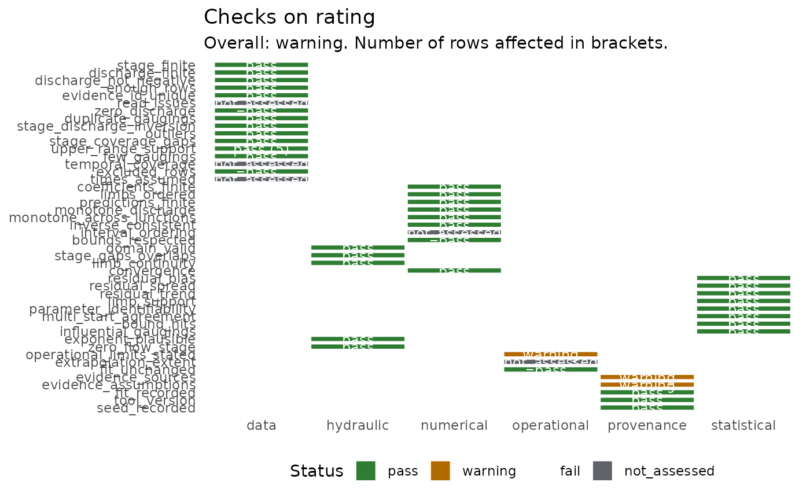

Looks at a rating from six sides and returns what it found as a FlodeAssessment. It does not give a score, a grade or a verdict. Each check states what it measured, whether that passed, and what to look at next, so that a reviewer can see the reasons and not only an answer. A rating that passes every check is not thereby approved: approval is a decision for a person.
The six domains, and the checks in each:
data: the checks of
validate_gaugings()run on the evidence the rating used (missing or non-finite values, negative or zero discharge, duplicates, inversions, outliers, gaps in stage coverage, thin support at the top, few gaugings, no recent gauging, excluded rows, assumed times);numerical: the technical checks of
rating_invariants()(finite coefficients, ordered limbs, monotonic discharge, a consistent inverse, interval order, bounds), andconvergence;statistical:
residual_bias,residual_spreadandresidual_trendper limb,limb_support,parameter_identifiability,multi_start_agreement,bound_hitsandinfluential_gaugings;hydraulic: whether the exponents and zero-flow stage are physically plausible, and the hydrometric checks of
rating_invariants()(gaps, steps at junctions, a limb that starts below its zero-flow stage);operational: whether the range it may be applied over has been stated, how far that goes beyond the gauged range, and whether the rating has been changed since it was fitted;
provenance: whether the evidence has a recorded source and ids, how the fit was made and by what version, and whether its assumptions are written down.
Independent and segmented fits are assessed with the same checks. A check
that cannot be computed for one of them, or for a rating that holds only
equations, is not_assessed and says why, never pass.
Arguments
- x
- bias_tol
Number. A limb whose median relative residual is further from zero than this is reported. Default 0.05 (5%).
- spread_tol
Number. A limb whose relative residual spread (the interquartile range divided by 1.349) exceeds this is reported. Default 0.15.
- trend_rho
Number. A limb whose relative residuals have a rank correlation with stage larger than this in absolute value, over at least 8 gaugings, is reported as misfitting systematically. Default 0.6.
- min_limb_gaugings
Integer. A limb with fewer gaugings is reported. Default 5.
- n_range
Numeric
c(lower, upper). A limb exponent outside this range is reported as hydraulically unusual. Defaultc(1, 3.5): roughly from a wide channel control to a steep V-notch or compound section.- zero_flow_margin
Number. A zero-flow stage
afurther below the lowest gauging than this multiple of the gauged stage range is reported. Default 1.- extrapolation_tol
Number. Operational limits that extend beyond the gauged range by more than this fraction of that range are reported. Default 0.2.
- cooks_warn
Number. A gauging whose Cook's distance exceeds this is reported as strongly influential. Default 1. The diagnostic
flag_influential_gaugings()uses the lower, usual 4/n rule.- continuity_tol
Number. Passed to
rating_invariants(). Default 0.01.- reference_time
The time recency of gaugings is measured from, as in
validate_gaugings(). DefaultSys.time(); set it to make a result reproducible.- ...
Further thresholds for
validate_gaugings().
Value
A FlodeAssessment with subject "rating". Its overall status
(see assessment_status()) is a status, never a score. print() lists
what did not pass and plot() draws every check.
Examples
set.seed(1)
gaugings <- data.frame(stage_m = round(seq(0.4, 3, length.out = 24), 3))
gaugings$discharge_cms <- round(3.2 * gaugings$stage_m^1.6 * exp(rnorm(24, sd = 0.03)), 3)
fit <- fit_rating(gaugings, quiet = TRUE)
assessment <- assess_rating(fit, reference_time = as.POSIXct("2026-01-01", tz = "UTC"))
assessment
#> <FlodeAssessment> rating, 24 row(s) assessed. Overall: warning
#> 38 pass, 3 warning, 0 fail, 5 not assessed
#> data: 13 pass, 0 warning, 0 fail, 3 not assessed
#> numerical: 8 pass, 0 warning, 0 fail, 1 not assessed
#> statistical: 8 pass, 0 warning, 0 fail, 0 not assessed
#> hydraulic: 5 pass, 0 warning, 0 fail, 0 not assessed
#> operational: 1 pass, 1 warning, 0 fail, 1 not assessed
#> provenance: 3 pass, 2 warning, 0 fail, 0 not assessed
#> [warning] operational_limits_stated: No operational limits are stated for this rating.
#> [warning] evidence_sources: No row of evidence records where it came from.
#> [warning] evidence_assumptions: Converted from a plain table; filled evidence_id, site_id, observation_time, source_type, source_name, source_version, quality_code, notes, exclusion_reason, included, weight, source_row, metadata. source_type assumed 'gauging', weight assumed 1, included TRUE unless stage or discharge is missing.
#> [not_assessed] read_issues: The table has no read_issue column, so reading problems could not be checked.
#> [not_assessed] temporal_coverage: No gauging has a date, so recency could not be judged.
#> [not_assessed] times_assumed: The table has no read_issue column, so assumed times could not be checked.
#> [not_assessed] interval_ordering: No bootstrap draws, so interval ordering could not be checked.
#> [not_assessed] extrapolation_extent: No limits are stated, so their extent cannot be judged.
assessment_checks(assessment)[status != "pass", .(domain, check_id, status)]
#> domain check_id status
#> <char> <char> <char>
#> 1: data read_issues not_assessed
#> 2: data temporal_coverage not_assessed
#> 3: data times_assumed not_assessed
#> 4: numerical interval_ordering not_assessed
#> 5: operational operational_limits_stated warning
#> 6: operational extrapolation_extent not_assessed
#> 7: provenance evidence_sources warning
#> 8: provenance evidence_assumptions warning
plot(assessment)
